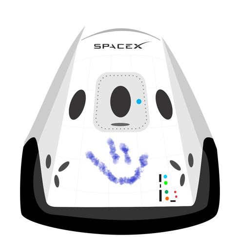

<html></html>
    <head>
        <title>Bienvenido a Hyperblog 2.0</title>
        <link rel="stylesheet" href="css/estilos.css" />
    </head>
    <body>
        <div id="container">
            <div id="cabecera">
                
                Hyperblog
                <span id="tagline">Tu blog de cabecera</span>
            </div>
            <div id="post">
                <h1>Este el es titulo 
                    atractivo e interesante del 
                    post
                </h1>
                <p> y este es el p&aacute;rrafo de inicio donde vamos a explicar
                    las cosas incre&iacute;bles que se 
                    pueden hacer con ramas
                 </p>
                 
                 <p>
                    Los blogs son la mejor
                    forma de compartir 
                    información y tus ideas.
                    mucho mas que ir a 
                    conferencias o salir en 
                    youtube. Excepto si eres un 
                    rockstar. pero 
                    estadisticamente no lo 
                    eres ...... por ahora
                 </p>           
                 <p>Suscribete y dale like </p>
            </div>
            <div id="footer">
                Hecho con amor en Platzi 
        </div>
        </div>
    </body>
</html>